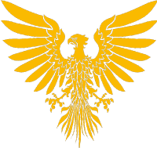
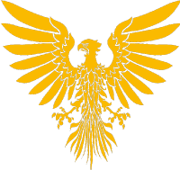

| Rozloha: | +- 40 Chunků[N] |
|---|---|
| Hlavní Město: | Neznámé[N] |
| Stavby: | Věž Doly Celnice Domy obyvatel Řečnická hala Iron Farma atd. |
|---|
| Počet Obyvatel: | 4[N] |
|---|---|
| Jazyky: | Čeština Polština |
| Náboženství: | Katolicismus (Oficiální) - 100% [N] |
| Státní Zřízení: | Parlamentní Demokracie |
|---|---|
| Vznik: | 7. Července 2022[N] |
| Zánik: | 5. Září 2022 |
| Prezident: | Netherit |
| Měna: | Tubaerská Lira |
| Předcházející | Následující | Žádné |  Polska540 Polska540 |
|---|
Norte Tubaero byl státní útvar na Třetí Sezóně FlaMaCraftu. Sousedila s Terra Corajosa, se kterou měla pozitivní vztah až do Září 2022. Jejími členy byli:
Je nejisté co původně znamenal, ale podle oficiálního projevu od Netherita:
"Je to výraz z Portugalštiny a taky trochu upravený."
Po začátku serveru vyplul Netherit ze spawnu jedním směrem a za ním Graphite. Netherit se usídlil v místním Spruce biomu a tam založil Norte Tubaero, zatímco Graphite se usídlil na vedlejší pláži kde založil Terra Corajosa. Menší katastrofou byl raid kterému museli čelit poměrně brzo ale po chvíli skončil a výsledky jsou nejisté.
Neznámo kdy a neznámo jak mělo Norte Tubaero volby, a výsledky jsou taktéž nejasné.
Někdy okolo Září 2022 vzniklo napětí mezi Norte Tubaero a Terra Corajosa, motivy jsou nejisté ale kritickou zprávu která zapálila knot přinesl dead2009cz. Po konferenci pár dní po 9. Září napětí upadlo, avšak dosavadní prezident Netherit nátlak nezvládnul a dlouho to vypadalo že kompletně odstoupí jak z jeho role, tak z aktivity na serveru.
Někdy během nebo po krizi došlo ke státnímu převratu[N] a Norte Tuaero nahradil stát Polska540. Avšak okolnosti jsou nejasné.
Je neznámo zda barvy na vlajce mají nějakou symboliku. Znak je upravená verze hvězdy přítomná na Filipínské vlajce.

Norte Tubaero vydávalo pouze pasy.
Z důvodu nedostatku dokumentace žádáme VŠECHNY ČLENY serveru jenž byli součástí první sezóny aby nám informace osobně doplnil.